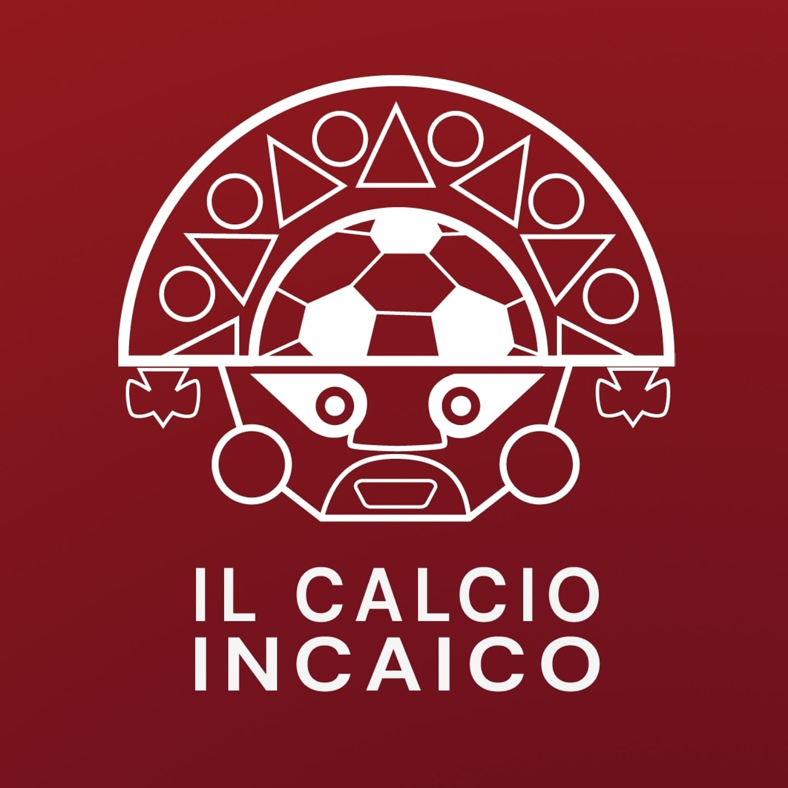

Portfolio
Quei pochi progetti mai portati a termine (maledetta procrastinazione)
Il Calcio Incaico
Pagina Instagram in lingua italiana dove vengono affrontati argomenti legatial calcio peruviano. Se sei
curioso, dai pure un'occhiata!
Pagina Instagram Il
Calcio Incaico
Cronicasdefutbol.pe
Canale Youtube in lingua spagnola a tema calcistico, nella quale raccontostorie e curiosità del calcio
peruviano. Se sei curioso, dai pure un'occhiata!
Pagina Instagram Il Calcio Incaico